トップ › チワちくRUN
チワちくRUN
チワワがちくわを集める犬のランゲーム
ちくわを集めてゴールをめざそう！
ちいさな犬たちが春の公園や桜並木から、夏の海辺・夏まつり、秋の紅葉、冬の雪の森、そして遠くの町まで元気いっぱいに駆けぬける 3D ランゲームです。モデルは工房のパピチワ犬「おはぎ」。
- 値段無料（広告・課金なし）
- 機種iPhone・iPad（横向き）／PC
- 言語日本語・英語
- 年齢4+
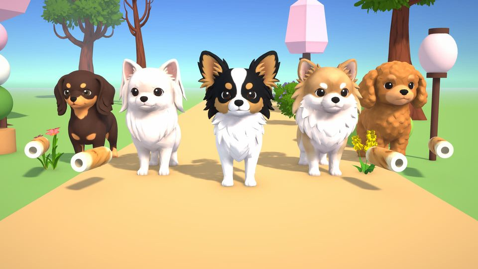
とくちょう
- 1
30 ステージ・3 つのエリア
公園、さくら並木、海辺、夏まつり、もみじの小道、雪の森、商店街、港町、千本鳥居……。難しさは 3 段階から選べます。
- 2
仲間の犬は 7 匹
条件をクリアすると仲間が増えます。犬ごとに「とくい・にがて」と 1 回だけ使える「ひっさつわざ」があります。
- 3
なでて、回して、写真に
犬をなでたり、くるっと回したりして愛でられます。しゃしんモードでスクリーンショットも。
- 4
40 種類以上の仕掛け
横切るねこ、はねるボール、寄せる波、カモメのきゅうこうか、動く壁、鳥居のトンネル……。
- 5
着せ替えとシール
遊ぶと貯まる「にくきゅうポイント」で首輪やリボンなど 13 の着せ替えと交換。くじはなく、何がもらえるかは最初から見えます。シールは 43 枚。
- 6
広告なし・課金なし
インターネットにつながなくても遊べます。お子さんに渡しても、知らないうちにお金がかかることはありません。
がめん
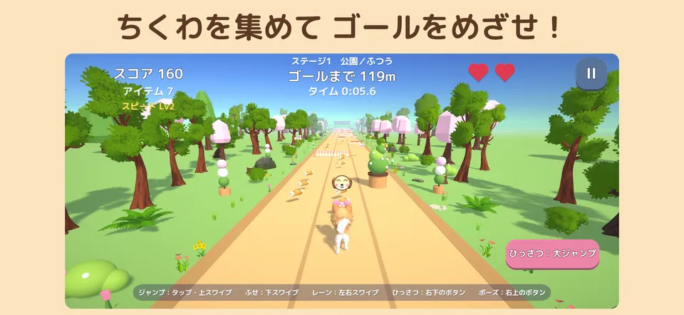
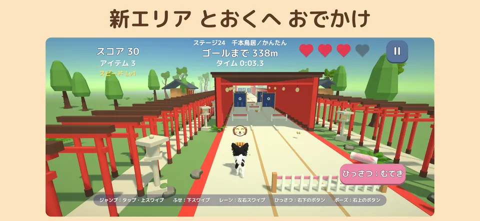
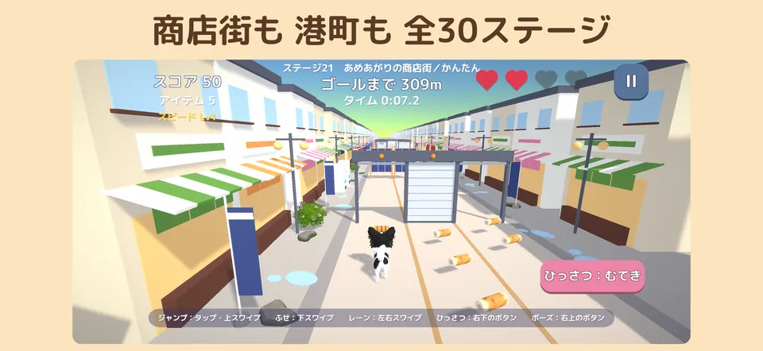
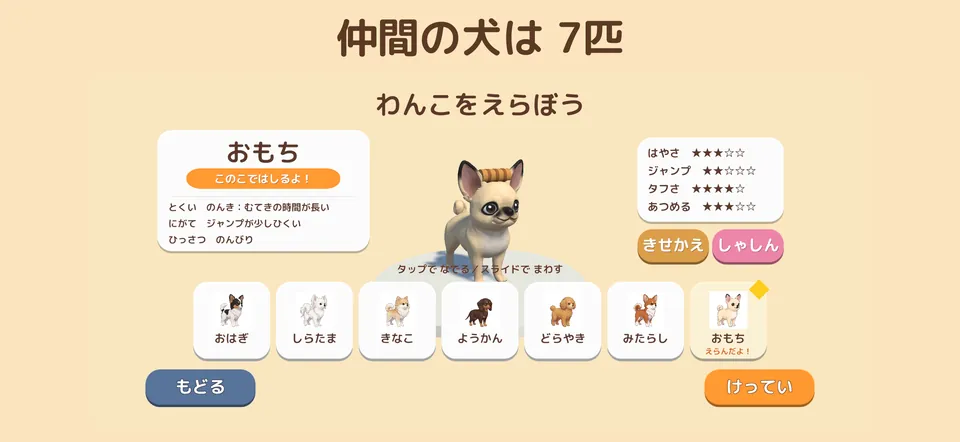
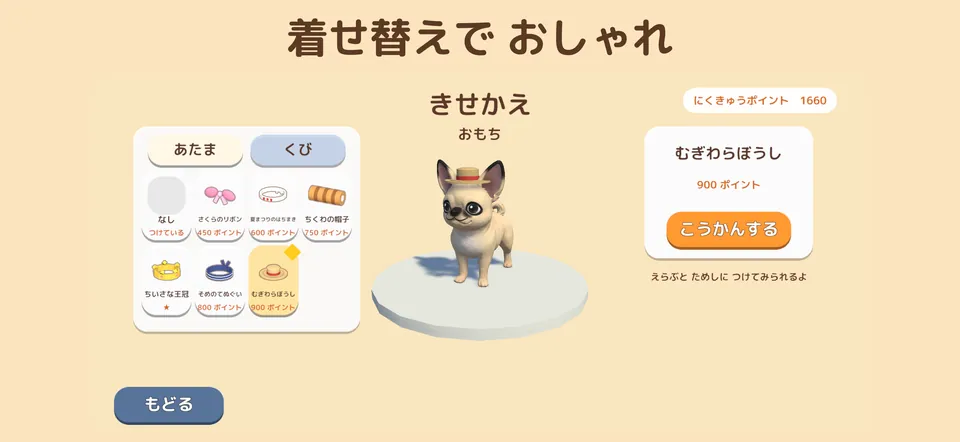
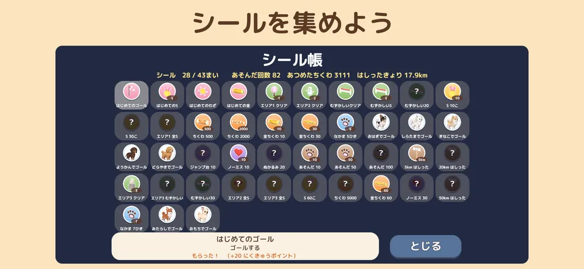
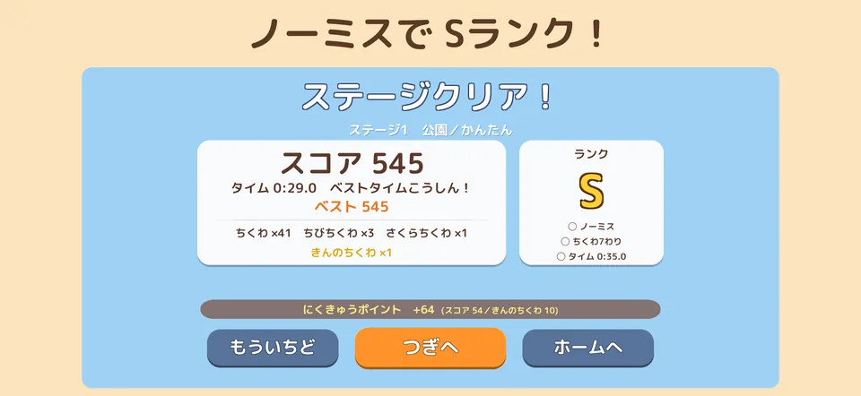
← 横にスクロールできます →
あそびかた
- 犬は自動で走ります。左右にスワイプしてレーンを移ります。
- 上にスワイプ（またはタップ）でジャンプ、下にスワイプでふせ。右下のボタンで「ひっさつわざ」。
- ちくわを集めるほど点数アップ。100 点ごとにスピードも上がります。1 ステージに 1 本だけ「きんのちくわ」がかくれています。
- ノーミス・ちくわ 7 割・目標タイムの 3 つを達成すると S ランク！ PC はキーボードやゲームコントローラーでも遊べます。
登場する犬たち
名前はぜんぶ和菓子。おはぎ以外は遊ぶと仲間になります。

おはぎ
チワワ×パピヨン
工房のモデル犬。黒い頭に白い線、大きな飾り耳、くるんとした白いしっぽ。
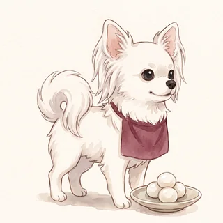
しらたま
チワワ×マルチーズ
まっしろでふわふわ。
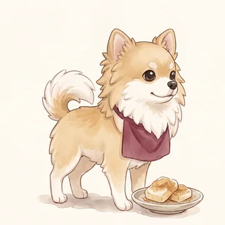
きなこ
チワワ×ポメラニアン
白とクリームにきなこ色の毛。
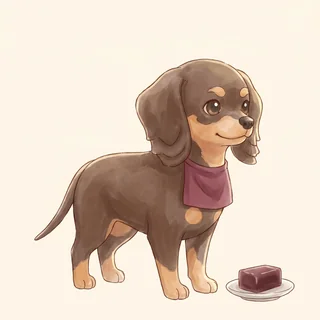
ようかん
チワワ×ダックスフンド
こげ茶にタン。たれ耳で胴が長い。
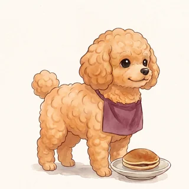
どらやき
チワワ×トイプードル
アプリコット色の巻き毛。
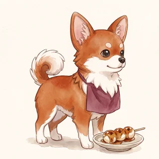
みたらし
チワワ×柴
チワちくRUN の 1.1 で仲間入り。
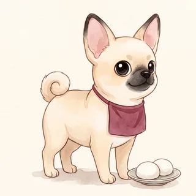
おもち
チワワ×パグ
チワちくRUN の 1.1 で仲間入り。
よくある質問
本当に無料ですか？ 広告や課金はありますか？
無料です。広告・アプリ内課金・くじ（ガチャ）はありません。
インターネットにつながなくても遊べますか？
はい。iPhone・iPad 版は通信しません。
ブラウザ版（unityroom）だけはエリアごとの合計タイムをランキングに送ります。
子どもに遊ばせても大丈夫ですか？
年齢区分は 4+ です。動物が傷つく場面はなく、ぶつかっても犬はしょんぼりするだけです。アカウント登録もありません。
ちくわを犬にあげてもいいですか？
ちくわはゲームの中だけのごほうびです。塩分が多いので、本物の犬にはあげないでください。
記録はどこに残りますか？
端末の中に自動でセーブされます（ベストスコア・ベストタイム・ランク）。アプリを消すと記録も消えます。ブラウザ版はそのブラウザに保存されます。
AI は使っていますか？
犬の 3D モデルは Meshy、キャラクター選択のイラストは Google Gemini で作り、作者が選んで調整しました。プログラムと画面の文章は AI のコーディング支援（Claude Code）を使って書き、作者が確認しています。遊んでいる間に AI が何かを作ることはありません。音楽・効果音・背景のモデルは人が作った素材です。
不具合やご意見はどこへ？
ゲームのお問い合わせフォーム（ログイン不要）か、このページの下のメールへどうぞ。
プライバシーについて（かんたんな説明）
- 名前や連絡先などの個人情報は集めません。アカウント登録もありません。
- 広告・アクセス解析・外部へのデータ送信はありません。
- 記録は端末の中だけに保存され、アプリを消すと消えます。
ほかの作品
-

くっつきチワだんご
うたた寝する飼い主のひざの上で犬たちが寄りそってお昼寝する落ちものパズル。
買い切り・広告なし（ブラウザ版は無料）iPhone・iPad／PC のブラウザ -

あみあみチワおさんぽ
三つ編みみたいにからまった犬たちのリードを入れかわりと持ちかえでほどくパズル。
無料（広告あり・広告の削除あり）iPhone・iPad／PC のブラウザ -

じりじりチワまて
「待て」のあいだにじりじり前に出る犬たち。「よし！」の瞬間、ぬけがけしたのはだれ？
無料（広告あり・広告の削除あり）iPhone・iPad -

チワ判子課長
チワワのおはぎ課長が、しっぽの先にぶら下げた判子で書類に判を押す。審査はきびしいねこ課長。
無料・広告なしPC のブラウザ（unityroom）